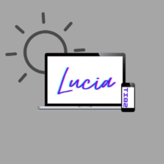
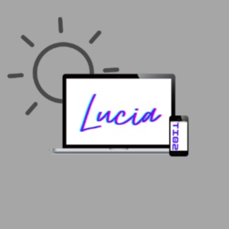

Selamat Datang Di Aplikasi Parkir STT-NF
Sejarah STT-NF bisa dilacak Tahun 1985, tatkala berdiri Yayasan Nurul Fikri dengan unit bisnis Bimbingan dan Konsultasi Belajar (BKB). Selanjutnya, dibentuk divisi pendidikan komputer pada Tahun 1994 dengan nama Nurul Fikri Computer & Statistics (NCS) atau disebut juga NF Computer. Sejak Tahun 1998 NF Computer mulai menyelenggarakan Pelatihan Linux dan Open Source pertama di Indonesia.
Profil Kampus STT-NF
 

Berita Kampus
Sekolah Tinggi Teknologi Terpadu Nurul Fikri Telah Mengadakan Sosialisasi Pembukaan PKM 2022.
13/01/2022
PKM merupakan salah satu wujud implementasi Tridharma Perguruan Tinggi yang diluncurkan oleh Direktorat Jenderal Pendidikan Tinggi di bawah pengelolaan Direktorat […]
Mahasiswa Berprestasi dan Kuliah Umum Teknologi Digital Peluang, Tantangan dan Ikhtiar Membersamainya.
28/12/2021
Sekolah Tinggi Teknologi Terpadu Nurul Fikri telah mengadakan Kuliah Umum dengan tema “Teknologi Digital (Peluang, Tantangan, dan Ikhtiar Membersamainya) pada […]